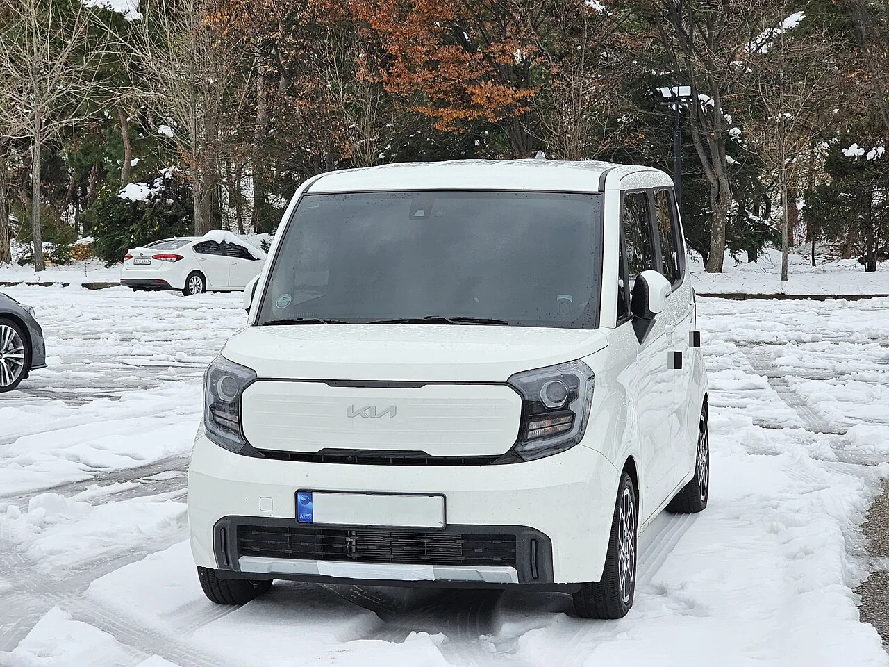

▲ 기아 레이 전측면. 슬라이딩 도어와 높은 전고를 갖춘 박스형 경차로, 가솔린·EV 모두 출고까지 10개월이 걸린다
1. 계약해도 못 받는 차, 지금 레이의 상황
기아 경차 레이가 가솔린과 EV를 가리지 않고 약 10개월의 출고 대기 기간을 기록하고 있다. 9월 초에 계약서를 쓰면 실제 차량을 인도받는 시점은 내년 여름 무렵이 된다는 뜻이다. 같은 기아 라인업 안에서 K5·K8은 4~5주, K9은 2개월이면 받을 수 있는 것과 비교하면, 레이 한 대의 대기 기간이 이례적으로 길다. 업계에서는 "사고 싶어도 방법이 없다"는 말이 나올 정도로 이례적인 병목 현상으로 보고 있다.
▲ 레이 전측면. 슬라이딩 도어와 박스형 실루엣이 실내 공간 활용성을 극대화한 경차의 정체성을 보여준다 ⓒ 기아
| 차종 | 파워트레인 | 대기 기간 |
|---|---|---|
| K5 | 가솔린 | 약 1개월(4~5주) |
| K8 | 가솔린 | 약 1개월(4~5주) |
| K9 | 가솔린 | 약 2개월 |
| 모닝 | 가솔린 | 약 2.5개월 |
| 레이 | 가솔린·EV 전 모델 | 약 10개월 |
2. 왜 하필 레이인가 — 동희오토의 좁은 생산 캐파
레이가 유독 오래 걸리는 근본적인 이유는 생산 라인 자체의 물리적 한계에 있다. 레이는 기아가 직접 생산하지 않고, 충남 서산의 동희오토에 전량 위탁 생산을 맡기고 있다. 동희오토는 2004년 모닝 생산을 시작으로 현재까지 모닝·레이·스토닉을 함께 만드는 곳으로, 연간 생산능력이 24만 대 안팎에 그친다. 세 차종이 하나의 생산라인 캐파를 나눠 쓰다 보니, 특정 모델에 수요가 몰려도 라인을 유연하게 늘릴 여지가 크지 않다.
여기에 2026년 3월에는 협력 부품업체의 화재로 동희오토 라인 일부가 가동을 멈추는 일까지 벌어졌다. 안 그래도 빠듯하던 생산 스케줄에 예기치 못한 공백이 더해지면서, 밀려 있던 주문이 그대로 대기 물량으로 쌓이는 결과로 이어졌다는 게 업계의 시각이다.
📍 참고로 알아두면 좋은 것
동희오토는 기아와 부품사 동희홀딩스의 합작법인으로, 모닝·레이·스토닉의 내수·수출 물량을 전량 위탁 생산한다. 세 차종이 한 공장의 생산 캐파를 나눠 쓰는 구조이기 때문에, 한 모델의 인기가 오르면 다른 모델의 생산 여력을 갉아먹는 방식으로 서로 영향을 주고받는다.
3. 차박족과 1인 자영업자까지, 겹겹이 쌓인 수요
공급이 빠듯한 사이 수요는 오히려 여러 방향에서 몰려들고 있다. 레이는 슬라이딩 도어와 경차치고 높은 전고 덕분에 실내 공간 활용도가 뛰어나, 몇 년 전부터 차박 캠핑족 사이에서 꾸준히 입소문을 타온 모델이다. 뒷좌석을 접으면 웬만한 성인이 눕기에도 부족함이 없는 적재 공간이 나오는데, 이 공간성이 캠핑용 침대·수납 시스템을 앉히기에 최적화된 구조로 통한다.
여기에 소상공인들의 화물 운송용 수요까지 더해진다. 슬라이딩 도어는 좁은 골목이나 주차 공간에서 짐을 싣고 내리기에 유리하고, 경차 특유의 낮은 취등록세·자동차세·보험료는 자영업자 입장에서 무시할 수 없는 유지비 이점이다. 여기에 레이 EV는 정부 보조금까지 더해져 실구매가가 큰 폭으로 낮아지는데, 이 때문에 도심 주차가 잦은 1인 사업자들 사이에서 "가성비 전기 밴"으로 통하며 별도의 수요층을 만들어내고 있다.

▲ 눈밭에 세워진 레이 전면부. 실제 인도 직후 촬영된 것으로 보이는 사진으로, 번호판 없이 임시 스티커만 붙어 있다 ⓒ 기아
4. 그래비티 트림은 더 오래 걸린다
레이 안에서도 유독 대기 기간이 늘어지는 트림이 있다. 최상위 사양인 시그니처를 기반으로 강인한 이미지를 더한 '그래비티'가 그렇다. 그래비티에는 사이드 타프(그늘막), 사이드 프로젝터 스크린, 탈부착식 수납가방, 조수석 테이블, 멀티 커튼 등 차박에 특화된 전용 용품이 대거 포함되는데, 이 용품들을 장착하는 별도 커스텀 공정이 추가되면서 기본 납기 외에 추가 대기 기간이 붙는다.
즉 기본 트림도 10개월을 기다려야 하는 마당에, 차박 수요를 정면으로 겨냥한 그래비티를 선택하면 그보다 더 늦게 받을 가능성이 크다는 뜻이다. 계약 시점에 대리점을 통해 트림별 정확한 예상 납기를 다시 한번 확인하는 것이 필수적인 이유다.
5. 오너들의 선택 — 취소차 사냥과 현실적인 대안

▲ 매장에 나란히 전시된 레이(오른쪽)와 모닝(왼쪽). 두 모델은 같은 동희오토 라인에서 생산되며 생산 캐파를 나눠 쓴다 ⓒ 기아
온라인 커뮤니티에서는 10개월 대기를 조금이라도 줄이려는 오너들의 노하우가 활발히 공유되고 있다. 계약을 취소한 물량, 이른바 '취소차'를 노려 대기 순번을 앞당기는 방식이 대표적이다. 실제로 일부 계약자는 이 방법으로 10개월이었던 대기 기간을 3개월 수준까지 줄였다는 후기를 남기기도 했다. 다만 취소차는 언제 나올지 예측할 수 없고 원하는 색상·옵션과 정확히 일치하지 않을 수 있어, 어디까지나 운이 따라야 하는 방법이라는 한계가 있다.
당장 차가 급하다면 같은 경차인 모닝을 대안으로 고려할 만하다. 모닝은 약 2.5개월이면 인도받을 수 있어 레이보다 대기 기간이 4배 가까이 짧다. 또는 대리점에 이미 들어와 있는 재고 차량, 즉 즉시 출고가 가능한 물량을 찾아보는 것도 현실적인 선택지로 꼽힌다. 레이의 정확한 최신 대기 현황은 기아 공식 홈페이지에서 확인할 수 있다. 바로가기
6. 경쟁 경차와 비교하면
레이의 10개월 대기가 유독 도드라져 보이지만, 경차·소형 세그먼트 전체를 놓고 보면 정도의 차이만 있을 뿐 비슷한 흐름이 감지된다. 현대 캐스퍼 일렉트릭 프리미엄 트림은 유럽 수출 우선 배정과 광주글로벌모터스의 생산능력 한계가 맞물리며 무려 28개월까지 대기가 늘어난 바 있다. 반면 준대형 이상 세단인 제네시스 라인업은 3주 안팎이면 받을 수 있어, 세그먼트에 따라 대기 기간 격차가 극단적으로 벌어지는 것이 2026년 국내 신차 시장의 특징이다.
| 모델 | 대기 기간 | 비고 |
|---|---|---|
| 기아 모닝 | 약 2.5개월 | 동희오토 생산, 상대적으로 여유 |
| 기아 레이(가솔린·EV) | 약 10개월 | 차박·자영업 수요 집중 |
| 기아 레이 그래비티 | 10개월 이상 | 커스텀 용품 장착 공정 추가 |
| 현대 캐스퍼 일렉트릭(프리미엄) | 약 28개월 | 유럽 수출 우선 배정, 광주글로벌모터스 캐파 한계 |
✅ 레이 계약 전, 이것만은 확인하세요
· 대기 기간은 매달 바뀔 수 있어 계약 직전 대리점에서 재확인 필요
· 그래비티 등 커스텀 트림은 기본 납기 외 추가 지연 가능성
· 취소차 발생 여부는 예측 불가, 운에 기대는 방법임을 감안
· 급하다면 모닝(2.5개월)이나 재고 즉시 출고 차량이 현실적 대안
· 2026년 3월 협력업체 화재 여파가 완전히 해소됐는지 최신 공지 확인

▲ 기아 모닝 전측면. 레이와 같은 동희오토 라인에서 생산되지만 대기 기간은 약 2.5개월로 훨씬 짧다 ⓒ 기아
7. 정리
기아 레이는 지금 계약해도 내년 여름에나 받을 수 있는, 사실상 기아 라인업에서 가장 구하기 힘든 차가 됐다. 위탁생산사 동희오토가 모닝·스토닉과 생산 캐파를 나눠 쓰는 구조적 한계에 협력업체 화재라는 돌발 변수까지 겹쳤고, 차박 캠핑족과 1인 자영업자 수요가 동시에 몰리면서 공급이 수요를 따라가지 못하는 상황이 장기화되고 있다. 당장 급하다면 모닝이나 재고 차량으로 눈을 돌리는 것이 현실적이며, 레이를 꼭 원한다면 트림별 정확한 납기를 미리 확인하고 취소차 발생 가능성까지 염두에 두는 전략이 필요해 보인다.